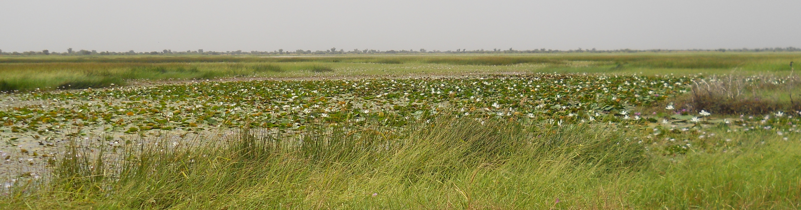

Research Output
Special Issues
2023
- Women’s Participation in Contract Farming.
Phyllis Mumia Machio,
Eva-Marie Meemken,
[Published Paper],
Journal of Development Studies
- Can drought insurance reduce Ethiopian pastoralists’ exposure to conflict?
Tekalign Sakketa,
Dan Maggio, John McPeak,
[Blog Post]
Economics That Really Matters
- The Protective Role of Index Insurance in the Experience of Violent Conflict: Evidence from Ethiopia
Tekalign Sakketa,
Dan Maggio, John McPeak, [Working Paper]
Households in Conflict Network
- Land market responses to weather shocks: evidence from rural Uganda and Kenya,
Rayner Tabetando,
Djomo Choumbou Raoul Fani,
Catherine Ragasa, Aleksandr Michuda
[Published Paper],
European Review of Agricultural Economics
-
Do Input Subsidies in Malawi Affect the Outcomes of Younger and Older Farmers Differently?
Christone Nyondo,
Zephaniah Nyirenda,
Maggie Munthali,
Brian Dillon, Sergio Puerto
[Policy Brief]
PRCI
-
Measuring the Heterogeneous Effects of Input Subsidies on Household Outcomes: Evidence from Malawi,
Christone Nyondo,
Zephaniah Nyirenda,
Maggie Munthali,
Brian Dillon, Sergio Puerto
[Working Paper]
PRCI
2022
-
How Specific Resilience Pillars Mitigate the Impact of Drought on Food Security: Evidence from Uganda
Nathan Sunday,
Rehema Kahunde,
Blessing Atwine, Adesoji Adelaja, Justin George
[Published Paper] Food Security
-
Domestic or Imported? An analysis of rice demand in Senegal,
Ndèye Fatou Faye,
Amy Faye,
Mouhamed Rassoul Sy
Seungmin Lee, John McPeak
[Policy Brief]
[Working Paper]
PRCI
-
How Specific Resilience Pillars Mitigate the Impact of Drought on Food Security: Evidence from Uganda
Nathan Sunday,
Rehema Kahunde,
Blessing Atwine, Adesoji Adelaja, Justin Kappiaruparampil
[Policy Brief]
PRCI
-
A Geometric Analysis of Technological Heterogeneity in the Agricultural Sector: Evidence from Maize in Tanzania
Karim Nchare,
Marcel Vitouley, Heidi Kaila, Yanyan Liu
[Working Paper]
PRCI
2021
-
Climate Shocks and Resilience: Evidence from Rural Ethiopia
Birhan S. Demissie,
Tesfahun A. Kasie,
Joanna B. Upton, Sylvia A. Blom
[Working Paper]
PRCI
-
Unpacking the Links between Conflict and Child Welfare: Evidence from a Foreign Insurgency
Larissa Nawo,
Heidi Kaila, Hyuk Harry Son
[Working Paper]
Households in Conflict Network
-
Experimental Evidence on the Impact of Payments and Property Rights on Forest User Decisions
Sarobidy Rakotonarivo,
Andrew Bell, Brian Dillon, A. Bradley Duthie, Adams Kipchumba, Ranaivo Andriarilala Rasologoson, Julie Razafimanahaka, Nils Bunnefeld
[Published Paper]
Frontiers in Conservation Science
-
Food price volatility and household food security: Evidence from Nigeria
Khadijat Busola Amolegb,
Joanna Upton, Elizabeth Bageant, Sylvia Blom
[Published Paper]
Food Policy
2020
-
Measurement Error Mechanisms Matter: Agricultural Intensification with Farmer Misperceptions and Misreporting
Kibrom A. Abay,
Leah E. M. Bevis, Christopher B. Barrett.
[Published Paper]
American Journal of Agricultural Economics
-
Aid, collective action and benefits to smallholders: Evaluating the World Food Program's purchase for progress pilot
Dambala Gelo Kutela,
Edwin Muchapondwa, Abebe Shimeles, Johane Dikgang
[Published Paper]
Food Policy
-
Climate-Smart Innovations and Rural Poverty in Ethiopia: Exploring Impacts and Pathways
Wondimagegn Mesfin Tesfaye,
Garrick Blalock, Nyasha Tirivayi
[Published Paper]
American Journal of Agricultural Economics
-
Forest commons, vertical integration and smallholder’s saving and investment responses: Evidence from a quasi-experiment
Dambala Gelo Kutela
[Published Paper]
World Development
-
Gender, entrepreneurship and food security in Niger
Sènakpon Fidèle Dedhouanou,
Abelkrim Araar
[Published Paper]
Review of Development Economics Special Symposium
2019
-
Correlated non-classical measurement errors, ‘Second best’ policy inference, and the inverse size-productivity relationship in agriculture
Kibrom Araya Abay,
Gashaw T. Abate, Christopher B. Barrett, Tanguy Bernard
[Published Paper]
Journal of Development Economics
- Diversify More or Less? Household Income Generation Strategies and Food Security in Rural Nigeria
Sènakpon Fidèle Dedhouanou,
John McPeak
[Published Paper]
Journal of Development Studies
-
Rainfall shocks and agricultural productivity: Implication for rural household consumption
Mulubrhan Amare,
Nathaniel D. Jensen, Bekele Shiferaw, Jennifer Denno Cisse
[Published Paper]
Agricultural Systems
2018
Related Work
2017
-
Nonfarm employment, agricultural intensification, and productivity change: empirical findings from Uganda
Mulubrhan Amare,
Bekele Shiferaw
[Published Paper]
Agricultural Economics
-
Locus of control and technology adoption in developing country agriculture: Evidence from Ethiopia
Kibrom Araya Abay,
Garrick Blalock, Guush Berhane
[Published Paper]
Journal of Economic Behavior & Organization
-
Technology Adoption and Risk Exposure Among Smallholder Farmers: Panel Data Evidence from Tanzania and Uganda.
Adamon N. Mukasa.
[Published Version]
World Development
-
The Adoption and Dis-adoption of improved maize varieties in Tanzania.
Bethuel Kinyanjui Kinuthia,
Edward Mabaya.
[Abstract]
-
Spatial urban development and the structural transformation of African agriculture.
Didier Alia,
Christopher Boone.
[Abstract]
Related Work
- Empirical Assessment of Subjective and Objective Soil Fertility Metrics in East Africa: Implications for Researchers and Policy Makers. Julia Berazneva, Linden McBride, Megan Sheahan, David Güereña. [Published Version] World Development
- Is Farmer-to-Farmer Extension Effective? The Impact of Training on Technology Adoption and Rice Farming Productivity in Tanzania. Yuko Nakano, Takuji W. Tsusaka, Takeshi Aida, Valerien O. Pede. [Published Version] World Development
- Intensification and Intrahousehold Decisions: Fertilizer Adoption in Burkina Faso. Hamza Haider, Melinda Smale, Veronique Theriault. [Published Version]
- Human health and pesticide use in Sub‐Saharan Africa. Megan Sheahan, Christopher Barrett and Casey Goldvale. [Policy Brief | Published Version] The Journal of the International Association of Agriculutral Economists
- Breaking Ground: Unearthing the Potential of High-resolution, Remote-sensing Soil Data in Understanding Agricultural Profits and Technology Use in Sub-Saharan Africa. Anil K. Bhargava, Tor Vagen, Anja Gassner. [Published Version] World Development
- Gendered Social Networks, Agricultural Innovations, and Farm Productivity in Ethiopia. Daniel Ayalew Mekonnen, Nicolas Gerber, Julia Anna Matz. [Published Version] World Development
- Diet transformation in Africa: the case of Ethiopia. Ibrahim Hassen Worku, Mekdim Dereje, Bart Minten, Kalle Hirvonen. [Published Version] The Journal of the International Association of Agriculutral Economists
- Patterns of Labor Productivity and Income Diversification – Empirical Evidence from Uganda and Nigeria. Abdoulaye I. Djido, Bekele A. Shiferaw. [Published Version] World Development
- Small Firms, Structural Change and Labor Productivity Growth in Africa: Evidence from Tanzania. Xinshen Diao, Josaphat Kweka, Margaret McMillan. [Published Version] World Development
- Cities and Agricultural Transformation in Africa: Evidence from Ethiopia. Joachim Vandercasteelen, Seneshaw Tamru Beyene, Bart Minten, Johan Swinnen. [Published Version] World Development
- Designing and evaluating sustainable development pathways for semi‐subsistence crop–livestock systems: lessons from Kenya. Roberto O. Valdivia, John M. Antle, Jetse J. Stoorvogel. [Published Version] The Journal of the International Association of Agriculutral Economists
- Finding default? Understanding the drivers of default on contracts with farmers’ organizations under the World Food Programme Purchase for progress pilot. Joanna Upton, Erin Lentz. [Published Version] The Journal of the International Association of Agriculutral Economists
- Agricultural Transformation in Africa? Assessing the Evidence in Ethiopia. Fantu N. Bachewe, Guush Berhane, Bart Minten, Alemayehu S. Taffesse. [Published Version] World Development
2016
Related Work